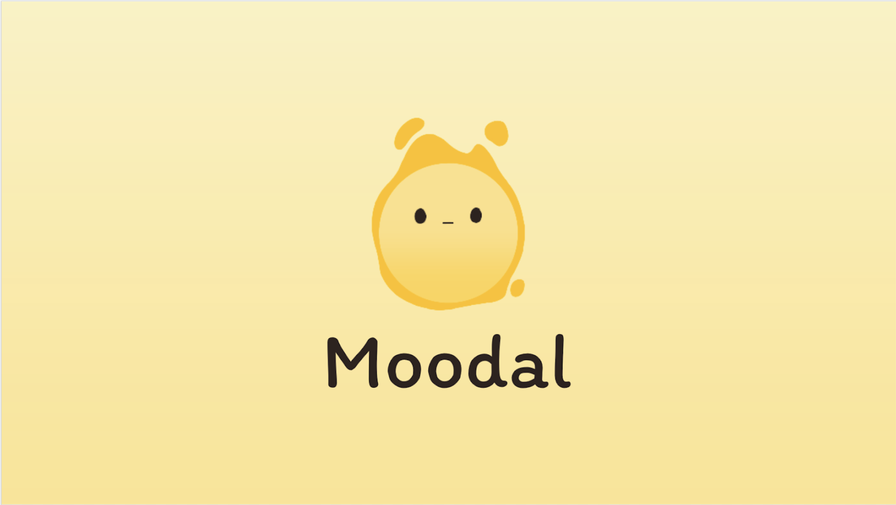
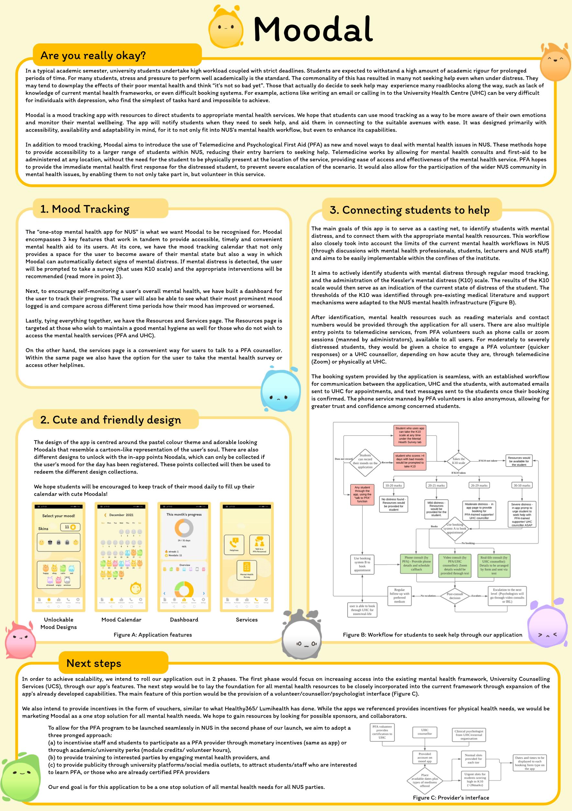

Full-Stack
Moodal

Moodal is a mood-tracking app that aims to be the one-stop mental-health companion for university students. It helps students become more aware of their emotions, flags when they may need help, and connects them to the right support with as little friction as possible. Built with a team at NUS Makerthon, where it placed third.
The problem
Students carry heavy workloads and tight deadlines, and often normalise their stress — "it's not that bad yet" — until it is. Those who do seek help hit roadblocks: unfamiliar mental-health frameworks and booking systems that feel insurmountable when you're already struggling. Moodal lowers that barrier.
What it does
- Mood tracking — a daily mood calendar that doubles as an early-warning system: when it detects signs of distress, it prompts the student to take the Kessler (K10) distress survey, and a dashboard lets them track how their mood trends over time.
- Friendly by design — a pastel world of "Moodal" characters (a cartoon stand-in for the user's mood) with collectible designs unlocked by logging moods daily, nudging students to keep the habit.
- Connecting students to help — K10 results map to tiered support, from self-serve resources to Psychological First Aid (PFA) volunteers and University Health Centre counsellors, delivered over telemedicine (phone or video) or in person. Booking is seamless, with automated emails and confirmation texts, and the PFA phone line is anonymous to build trust.
What made it novel
Beyond mood tracking, Moodal introduced telemedicine and Psychological First Aid as new entry points into the campus mental-health workflow — widening access without requiring a student to be physically present, and letting the wider community volunteer as first responders.
